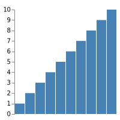

Plot Targets
I have wanted to see my plots in many places. I haven't yet found one, that vega won't do.
Desktop Browser
Will open a new browser window in your desktop based browser, pointing to a temporary file.

import viz.PlotTargets.desktopBrowser
import viz.extensions.RawIterables.*List(("A",5),("B",8),("C",-1)).plotBarChart(List())How desktop browser works
The library writes a (temporary) file, assuming that
java.io.File.createTempFile()Is available. That temporary file assumes that you have an internet connection, and can resolve
<script src="https://cdn.jsdelivr.net/npm/vega-embed@5"></script>
<script src="https://cdn.jsdelivr.net/npm/vega@5"></script>
<script src="https://cdn.jsdelivr.net/npm/vega-lite@5"></script>Finally, we assume the existence of a
java.awt.DesktopWhich has a browser available...
java.awt.Desktop.browse()And we browse to the temporary file created in step one. On some linux distributions, this may not work. Consider using the websocket target instead.
Websocket
This given will start a webserver which listens on a random port to incoming http requests and updates the plot in your browser.
import viz.PlotTargets.websockets
import viz.extensions.*List(("A",5),("B",8),("C",-1)).plotBarChart(List())Almond
Feeds a jupyter computing instance the correct MIME type and the JSON spec, to display the plot in the Jupyter notebook (or VSCode notebook!) environment.
import viz.PlotTargets.almondviz.vega.plots.BarChart(
List(
spec => spec("title") = "Got Viz?",
spec => {spec("height") = 200; spec("width") = 200}
)
)VSCode
Use the almond target and a .ipynb...
Gitpod
Gitpod support is kind of brittle and needs a little config. By default, dedav will attempt to contact port 48485 of a webserver it starts in the pod. It will detect the pod address through the gitpod environment variables.
You may change the port number, by setting the environment variable DEDAV_POD_PORT. If it is not set, it's default port is 48485.
The port number, you will need to set in the configuration of your gitpod project. In your .gitpod.yml
ports:
- port: 48485
onOpen: open-browser
visibility: public48485 is if you do not require a custom port. In your repl, try...
import viz.PlotTargets.gitpod
import viz.extensions.RawIterables.*
List(("A",5),("B",8),("C",-1)).plotBarChart(List())
List(("A",5),("B",8),("C",-1)).plotBarChart(List())The duplicates command is deliberate. The first request will be ignored - it starts the webserver behind the scenes. Unfortunately, I can't find a way to wait for that process to finish, and then send the request - gitpod appears to wait to open up the ports, until the command has finished executing. I am outsmarted...
The second request however... should work...

Do Nothing
import viz.PlotTargets.doNothing
import viz.extensions.RawIterables.*
List(("A",5),("B",8),("C",-1)).plotBarChart(List())To no ones surprise, does nothing! The implementation simply executes unit (). I regret the CPU cycles :-).
Importantly, this is default behaviour - important when we reach scala JS.
printlnTarget
Formats and prints the final JSON spec to the console.
import viz.PlotTargets.printlnTarget
import viz.extensions.RawIterables.*
List(("A",5),("B",8),("C",-1)).plotBarChart(List())
// {
// "$schema": "https://vega.github.io/schema/vega/v5.json",
// "description": "A basic bar chart example, with value labels shown upon pointer hover.",
// "width": 400,
// "height": 200,
// "padding": 5,
// "data": [
// {
// "name": "table",
// "values": [
// {
// "category": "A",
// "amount": 5
// },
// {
// "category": "B",
// "amount": 8
// },
// {
// "category": "C",
// "amount": -1
// }
// ]
// }
// ],
// "signals": [
// {
// "name": "tooltip",
// "value": {},
// "on": [
// {
// "events": "rect:pointerover",
// "update": "datum"
// },
// {
// "events": "rect:pointerout",
// "update": "{}"
// }
// ]
// }
// ],
// "scales": [
// {
// "name": "xscale",
// "type": "band",
// "domain": {
// "data": "table",
// "field": "category"
// },
// "range": "width",
// "padding": 0.05,
// "round": true
// },
// {
// "name": "yscale",
// "domain": {
// "data": "table",
// "field": "amount"
// },
// "nice": true,
// "range": "height"
// }
// ],
// "axes": [
// {
// "orient": "bottom",
// "scale": "xscale"
// },
// {
// "orient": "left",
// "scale": "yscale"
// }
// ],
// "marks": [
// {
// "type": "rect",
// "from": {
// "data": "table"
// },
// "encode": {
// "enter": {
// "x": {
// "scale": "xscale",
// "field": "category"
// },
// "width": {
// "scale": "xscale",
// "band": 1
// },
// "y": {
// "scale": "yscale",
// "field": "amount"
// },
// "y2": {
// "scale": "yscale",
// "value": 0
// }
// },
// "update": {
// "fill": {
// "value": "steelblue"
// }
// },
// "hover": {
// "fill": {
// "value": "red"
// }
// }
// }
// },
// {
// "type": "text",
// "encode": {
// "enter": {
// "align": {
// "value": "center"
// },
// "baseline": {
// "value": "bottom"
// },
// "fill": {
// "value": "#333"
// }
// },
// "update": {
// "x": {
// "scale": "xscale",
// "signal": "tooltip.category",
// "band": 0.5
// },
// "y": {
// "scale": "yscale",
// "signal": "tooltip.amount",
// "offset": -2
// },
// "text": {
// "signal": "tooltip.amount"
// },
// "fillOpacity": [
// {
// "test": "datum === tooltip",
// "value": 0
// },
// {
// "value": 1
// }
// ]
// }
// }
// }
// ]
// }
// res2: BarChart = BarChart(
// mods = List(
// viz.extensions.package$RawIterables$$$Lambda$15597/0x0000000803b5f840@bc55d6e
// )
// )Vega CLI outputs
The vega CLI allows you to output pictures to (non interactive) SVG, PNG, and PDF formats.
This library does not magically set vega cli up for you. It assumes that you have sucessfully done that yourself - i.e. probably you need node.js and have successfully run npm install -g vega-cli... and tested that worked.
Assuming we're plotting
(1 to 10).plotBarChart()PNG
import viz.PlotTargets.pdf
$import viz.PlotTargets.pdfMarkdown can't display this... but it works I promise.
SVG
import viz.PlotTargets.svg
How it works
For this library, the first class citizen is a browser...
Every time an object is created which extends the "Spec" trait, it executes the newObject.show() side effect. That side effect requires context, provided through a given PlotTarget which is in scope.
Those "given" targets, described below, are accessible at viz.PlotTargets.xxxxx
Many of these rely on writing temp files, and a java.awt.Desktop.browse(), and an internet connection. If your environment does not have those capabilities, then you'll need to look elsewhere or take an advanced approach.
The path of the temporary file is located in the "out" property of the case class, which is of type Unit | os.Path. If the target creates a temporary file, you may "move it around" wherever you wish, using the path as a starting point.